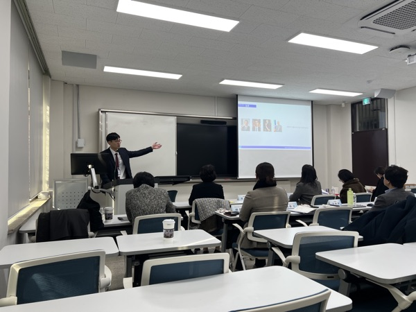

Yeonwook Kang
Yeonwook Kang is a researcher based in South Korea. His research interests focus on how demographic changes, particularly immigration, shape voters' political behavior and how social integration and cohesion emerge and develop in increasingly diverse societies, with a regional focus in East Asia and America. He holds a B.A. in Political Science and a Master's degree in Public Policy, specializing in Public Finance and Political Economy.
He helped organize the 2026 GSPE Lab Workshop.